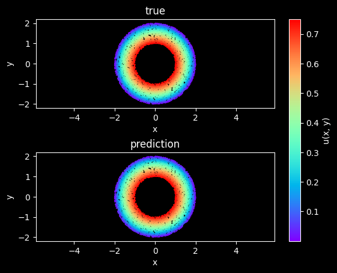

作用于圆环的二维Poisson问题¶


本案例要求MindSpore版本 >= 2.0.0调用如下接口: mindspore.jit，mindspore.jit_class，mindspore.jacrev。
概述¶
泊松方程是一个在理论物理中具有广泛效用的椭圆偏微分方程。例如，泊松方程的解是由给定电荷或质量密度分布引起的势场；在已知势场的情况下，可以计算静电或引力（力）场。
问题描述¶
我们从二维齐次泊松方程出发，
\[f + \Delta u = 0\]
其中 u 是主变量， f 是源项， \(\Delta\) 表示拉普拉斯运算符。
我们考虑源项 f (\(f=1.0\))则泊松方程可以表示为：
\[\frac{\partial^2u}{\partial x^2} + \frac{\partial^2u}{\partial y^2} + 1.0 = 0,\]
本案例中，使用Dirichlet边界条件和Neumann边界条件。格式如下：
外圆边界上的Dirichlet边界条件：
\[u = 0\]
内圆边界上的Neumann边界条件：
\[du/dn = 0\]
本案例利用PINNs方法学习 \((x, y) \mapsto u\)，实现泊松方程的求解。
技术路径¶
MindFlow求解该问题的具体流程如下：
创建数据集。
构建模型。
优化器。
Poisson2D。
模型训练。
模型推理及可视化。
[1]:
import time
import numpy as np
import sympy
from mindspore import nn, ops, Tensor, set_context, set_seed, jit
from mindspore import dtype as mstype
import mindspore as ms
下述src包可以在applications/physics_driven/poisson_ring/src下载。
[2]:
from mindflow.pde import Poisson, sympy_to_mindspore
from mindflow.cell import MultiScaleFCCell
from mindflow.utils import load_yaml_config
from src import create_training_dataset, create_test_dataset, calculate_l2_error, visual_result
set_seed(123456)
set_context(mode=ms.GRAPH_MODE, device_target="GPU", device_id=5)
加载 poisson2d_cfg.yaml ， 用户可以修改配置文件中的参数。
[3]:
# load configurations
config = load_yaml_config('poisson2d_cfg.yaml')
创建数据集¶
本案例根据求解域、边值条件进行随机采样，生成训练数据集与测试数据集，具体设置如下：
[4]:
# create training dataset
dataset = create_training_dataset(config)
train_dataset = dataset.batch(batch_size=config["train_batch_size"])
# create test dataset
inputs, label = create_test_dataset(config)
构建模型¶
本例使用简单的全连接网络，深度为6层，激活函数为tanh函数。
[5]:
# define models and optimizers
model = MultiScaleFCCell(in_channels=config["model"]["in_channels"],
out_channels=config["model"]["out_channels"],
layers=config["model"]["layers"],
neurons=config["model"]["neurons"],
residual=config["model"]["residual"],
act=config["model"]["activation"],
num_scales=1)
优化器¶
[6]:
optimizer = nn.Adam(model.trainable_params(), config["optimizer"]["initial_lr"])
Poisson2D¶
Poisson2D包含求解问题的控制方程、狄利克雷边界条件、诺曼边界条件等。使用sympy以符号形式定义偏微分方程并求解所有方程的损失值。
[7]:
class Poisson2D(Poisson):
def __init__(self, model, loss_fn=nn.MSELoss()):
super(Poisson2D, self).__init__(model, loss_fn=loss_fn)
self.bc_outer_nodes = sympy_to_mindspore(self.bc_outer(), self.in_vars, self.out_vars)
self.bc_inner_nodes = sympy_to_mindspore(self.bc_inner(), self.in_vars, self.out_vars)
def bc_outer(self):
bc_outer_eq = self.u
equations = {"bc_outer": bc_outer_eq}
return equations
def bc_inner(self):
bc_inner_eq = sympy.Derivative(self.u, self.normal) - 0.5
equations = {"bc_inner": bc_inner_eq}
return equations
def get_loss(self, pde_data, bc_outer_data, bc_inner_data, bc_inner_normal):
pde_res = self.parse_node(self.pde_nodes, inputs=pde_data)
pde_loss = self.loss_fn(pde_res[0], Tensor(np.array([0.0]), mstype.float32))
bc_inner_res = self.parse_node(self.bc_inner_nodes, inputs=bc_inner_data, norm=bc_inner_normal)
bc_inner_loss = self.loss_fn(bc_inner_res[0], Tensor(np.array([0.0]), mstype.float32))
bc_outer_res = self.parse_node(self.bc_outer_nodes, inputs=bc_outer_data)
bc_outer_loss = self.loss_fn(bc_outer_res[0], Tensor(np.array([0.0]), mstype.float32))
return pde_loss + bc_inner_loss + bc_outer_loss
模型训练¶
使用MindSpore >= 2.0.0的版本，采用函数式编程的方式训练网络。
[8]:
def train():
problem = Poisson2D(model)
def forward_fn(pde_data, bc_outer_data, bc_inner_data, bc_inner_normal):
loss = problem.get_loss(pde_data, bc_outer_data, bc_inner_data, bc_inner_normal)
return loss
grad_fn = ops.value_and_grad(forward_fn, None, optimizer.parameters, has_aux=False)
@jit
def train_step(pde_data, bc_outer_data, bc_inner_data, bc_inner_normal):
loss, grads = grad_fn(pde_data, bc_outer_data, bc_inner_data, bc_inner_normal)
loss = ops.depend(loss, optimizer(grads))
return loss
steps = config["train_steps"]
sink_process = ms.data_sink(train_step, train_dataset, sink_size=1)
model.set_train()
for step in range(steps):
local_time_beg = time.time()
cur_loss = sink_process()
if step % 100 == 0:
print(f"loss: {cur_loss.asnumpy():>7f}")
print("step: {}, time elapsed: {}ms".format(step, (time.time() - local_time_beg) * 1000))
calculate_l2_error(model, inputs, label, config["train_batch_size"])
visual_result(model, inputs, label, step+1)
[9]:
time_beg = time.time()
train()
print("End-to-End total time: {} s".format(time.time() - time_beg))
poission: Derivative(u(x, y), (x, 2)) + Derivative(u(x, y), (y, 2)) + 1.0
Item numbers of current derivative formula nodes: 3
bc: u(x, y)
Item numbers of current derivative formula nodes: 1
bc_r: Derivative(u(x, y), n) - 0.5
Item numbers of current derivative formula nodes: 2
loss: 1.257777
step: 0, time elapsed: 7348.472833633423ms
predict total time: 151.28588676452637 ms
l2_error: 1.1512688311539545
==================================================================================================
loss: 0.492176
step: 100, time elapsed: 246.30475044250488ms
predict total time: 1.9807815551757812 ms
l2_error: 0.7008664085681209
==================================================================================================
loss: 0.006177
step: 200, time elapsed: 288.0725860595703ms
predict total time: 2.8748512268066406 ms
l2_error: 0.035529497589628596
==================================================================================================
loss: 0.003083
step: 300, time elapsed: 276.9205570220947ms
predict total time: 4.449129104614258 ms
l2_error: 0.034347416303136924
==================================================================================================
loss: 0.002125
step: 400, time elapsed: 241.45269393920898ms
predict total time: 1.9965171813964844 ms
l2_error: 0.024273206318798948
==================================================================================================
...
==================================================================================================
loss: 0.000126
step: 4500, time elapsed: 245.61786651611328ms
predict total time: 8.903980255126953 ms
l2_error: 0.009561532889489787
==================================================================================================
loss: 0.000145
step: 4600, time elapsed: 322.16882705688477ms
predict total time: 7.802009582519531 ms
l2_error: 0.015489169733942706
==================================================================================================
loss: 0.000126
step: 4700, time elapsed: 212.70012855529785ms
predict total time: 1.6586780548095703 ms
l2_error: 0.009361597111586684
==================================================================================================
loss: 0.000236
step: 4800, time elapsed: 215.49749374389648ms
predict total time: 1.7461776733398438 ms
l2_error: 0.02566272469054492
==================================================================================================
loss: 0.000124
step: 4900, time elapsed: 256.4735412597656ms
predict total time: 55.99832534790039 ms
l2_error: 0.009129306458721625
==================================================================================================
End-to-End total time: 1209.8912012577057 s
模型推理及可视化¶
训练后可对流场内所有数据点进行推理，并可视化相关结果。
[10]:
# visualization
steps = config["train_steps"]
visual_result(model, inputs, label, steps+1)
